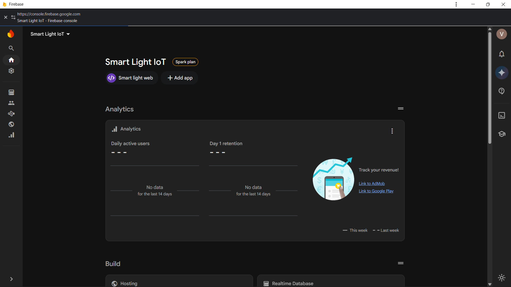
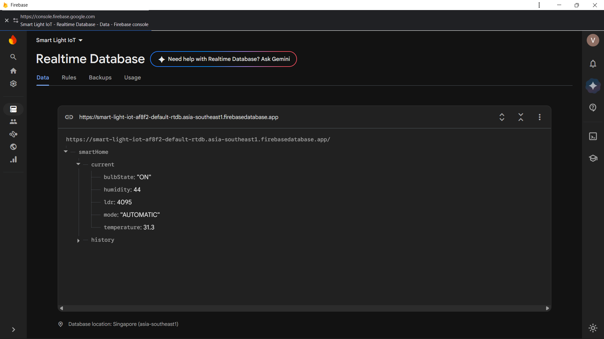

IoT Project · Task 4
ESP32 Smart Bulb Firebase Dashboard
A custom Firebase-hosted web dashboard controls an ESP32 smart light through Firebase Realtime Database. The project combines web pages, cloud state, sensor readings, manual and automatic modes, and a GPIO-controlled relay.
Live web application
The screenshots show the deployed Smart Light IoT site, including its landing page, login page, and connected control dashboard.
Open the Smart Light IoT dashboardProject evidence




Overview and architecture
The ESP32 communicates with Firebase Realtime Database over its cloud APIs. The browser dashboard writes control state and listens for current readings. Firebase synchronizes data between the web app and connected device; the ESP32 maps bulb state to an active-LOW relay signal on GPIO 26.
The supplied notes describe the planned control path as /bulb/state. The Firebase screenshot captures a current data tree at /smartHome/current, including bulbState, sensor readings, and operating mode. The two schemas are identified separately here rather than treated as identical.
Hardware and software
Hardware
- ESP32 DevKit V1
- 1-channel 5V relay module
- Bulb and suitable holder
- 5V Micro-USB supply
- Wi-Fi and a browser device
Software and cloud services
- Firebase Realtime Database
- Firebase Hosting and Console
- Firebase JavaScript SDK v12.1.0
- Firebase ESP32 client library
- Arduino IDE
- HTML, JavaScript, and CSS dashboard
Dashboard features
- Custom landing, login, and control pages
- Manual ON/OFF bulb control
- Automatic lighting mode with adjustable LDR threshold
- Live temperature and humidity readings from DHT11
- Ambient light level from LDR
- Bulb status, operating mode, and connection status
The provided dashboard screenshot shows Manual mode selected with the bulb OFF. The database screenshot is a separate capture and shows the bulb state ON with Automatic mode and sensor values.
Wiring and relay operation
ESP32 control side
- 5V/VIN → relay VCC
- GND → relay GND
- GPIO 26 → relay IN
Switched side
- Supply line → relay COM
- Relay NO → bulb terminal 1
- Bulb terminal 2 → supply return
The relay uses active-LOW logic: GPIO 26 LOW energizes the relay and turns the bulb on; HIGH de-energizes it and turns the bulb off. Begin circuit tests with a low-voltage lamp or LED and keep mains wiring isolated and enclosed.
Result and learning
This project brings a custom web interface, cloud database, ESP32 firmware, sensor telemetry, and relay output into one smart-light system. It builds on earlier IoT tasks by replacing a third-party dashboard with a custom Firebase-hosted application.
The work demonstrates real-time database synchronization, web application deployment, manual and automatic operating modes, and embedded control using an active-LOW relay.
Complete project write-up
Expand to read all sections from the project notes
TASK 4 // STAGE 04
Week 4 Implementation
Task 4 — ESP32 Smart Bulb Firebase Dashboard
Full-Stack Custom Web Dashboard & Firebase Realtime Database Control
ESP32 Firebase Realtime Database Firebase Web SDK 1-Channel Relay Wi-Fi HTML/JS Dashboard Bulb / AC Lighting
Evidence note: The implementation brief describes
/bulb/stateas the planned control path. The supplied Firebase capture shows/smartHome/current/bulbStatewith sensor readings and operating mode. The screenshots are preserved as captured, and the exact RTDB path used by the deployed firmware should match its configured database schema.
1. Overview
In Task 4, the aim is to create a custom full-stack web dashboard hosted using Firebase to control an ESP32 Smart Bulb through the Firebase Realtime Database and a 1-channel electromechanical relay.
Instead of using third-party dashboards such as Adafruit IO, this project uses a personally developed web application with landing, login, and control pages. The dashboard also includes Automatic and Manual modes.
Engineering Objectives
- Create a Google Firebase project named "Smart Bulb IoT" and initialize the Realtime Database in test mode.
- Create a structured JSON database path
/bulb/statewith the values "ON" and "OFF". - Register a Firebase Web App and configure the modular Firebase JavaScript SDK.
- Develop a multi-page web application containing
index.html,login.html, anddashboard.html. - Deploy the web application using Firebase Hosting.
- Program the ESP32 to connect to Wi-Fi and Firebase RTDB and monitor
/bulb/state. - Use GPIO 26 to control the relay.
- Test real-time two-way synchronization between the web dashboard and the physical relay/bulb.
Main Deliverables
- Live Firebase Web Dashboard deployed at
https://smart-light-iot-af8f2.firebaseapp.com/ - Firebase Realtime Database containing the
/bulb/statestructure - Responsive multi-page web dashboard with Landing, Login, and Dashboard pages
- Automatic and Manual operating modes
- ESP32 firmware connected to Firebase RTDB and controlling the GPIO 26 relay
- Hardware testing photographs such as
task4a.png,task4b.png, andtask4c.png
2. Core Concepts & Theoretical Principles
Firebase Cloud Architecture & Real-Time Synchronization
This task focuses on understanding Firebase Realtime Database, real-time synchronization, and the use of a custom web client hosted through Firebase.
Firebase is a Cloud BaaS, NOT a Transport Protocol
Firebase is a Backend-as-a-Service (BaaS) platform provided by Google. It is not itself a communication protocol.
In this project, the ESP32 and web browser communicate with the Firebase Realtime Database using Firebase APIs over HTTPS and real-time streaming mechanisms.
Firebase Realtime Database
Firebase RTDB is a cloud-based NoSQL database that stores information in the form of a JSON tree.
When the user presses the ON or OFF button on the custom dashboard, the Firebase database updates the bulb/state value and sends the updated information to connected listeners, including the ESP32.
Custom Dashboard vs Third-Party Dashboard
Unlike the earlier task where a ready-made Adafruit IO dashboard was used, this project provides complete control over the web interface and application logic.
The application is hosted using Firebase Hosting and contains custom login functionality, Automatic/Manual mode selection, and real-time status information.
Relay Active-LOW Operation
The 1-channel relay connected to GPIO 26 uses active-LOW logic.
When GPIO 26 is pulled LOW, the relay is activated and the COM and NO contacts are connected, allowing the bulb to turn ON.
When GPIO 26 is HIGH, the relay is deactivated and the bulb turns OFF.
Live Deployment
The custom dashboard is hosted on Firebase at:
https://smart-light-iot-af8f2.firebaseapp.com/
When a user changes the switch from a browser, the selected state is stored in Firebase and synchronized with the ESP32.
3. System Design & Architectural Diagram
The complete system connects the custom Firebase web application, Firebase Realtime Database, ESP32, relay, and bulb.
Communication & Data Flow
DHT11 / LDR → ESP32 → Wi-Fi → Firebase Cloud Platform ↔ Web Dashboard
Firebase acts as the cloud service rather than being a communication protocol.
When the user selects ON in dashboard.html, the Firebase JavaScript SDK writes:
set(bulbRef, "ON");to the Firebase Realtime Database.
The database updates the JSON node and sends the change through the active connection to the ESP32.
The ESP32 receives "ON" and sets GPIO 26 to LOW, activating the relay and turning the bulb ON.
When OFF is selected, the database state changes to "OFF". GPIO 26 becomes HIGH, the relay switches OFF, and the bulb turns OFF.
4. Hardware Bill of Materials & Software Dependencies
Hardware Components
| Component | Specification | Pin / Interface | Purpose |
|---|---|---|---|
| ESP32 DevKit V1 | Dual-core Xtensa 32-bit @ 240 MHz, 2.4 GHz Wi-Fi | USB Serial / GPIO 26 | Connects to Wi-Fi and Firebase and controls the relay |
| 1-Channel 5V Relay Module | Opto-isolated, 10A 250VAC / 10A 30VDC | VCC → 5V/VIN, GND → GND, IN → GPIO 26 | Electrically controlled switching device |
| Bulb + Suitable Holder | Low-voltage DC test lamp/LED or suitable AC bulb | COM and NO contacts | Lighting load controlled by the relay |
| Computer / Laptop / Smartphone | Internet-enabled browser | Browser / HTTPS | Used to access the web dashboard |
Software and Libraries
- Firebase Realtime Database — Stores
/bulb/state - Google Firebase Console — Used for cloud configuration
- Firebase Hosting — Hosts the web application
- Firebase JavaScript SDK v12.1.0 — Handles database access and real-time updates
- Firebase-ESP-Client / FirebaseESP32 — Allows ESP32 communication with Firebase RTDB
- Arduino IDE — Used for ESP32 programming
Power Configuration
The ESP32 is powered using a 5V Micro-USB cable.
The relay coil is powered from 5V/VIN, with the ESP32 and relay sharing a common ground.
5. Circuit Wiring & Pinout Mapping
Control Side
- ESP32 5V/VIN → Relay VCC
- ESP32 GND → Relay GND
- ESP32 GPIO 26 → Relay IN
Switched Side
- Power supply line → Relay COM
- Relay NO → Bulb terminal 1
- Bulb terminal 2 → Power return
| Relay Pin | ESP32 / Connection | Signal Type | Description |
|---|---|---|---|
| Relay VCC | 5V / VIN | Power | Supplies the relay coil |
| Relay GND | GND | Ground | Common ground |
| Relay IN | GPIO 26 | Digital | Active-LOW control signal |
| Relay COM | Power Supply Live / DC (+) | Power | Common switching terminal |
| Relay NO | Bulb Terminal 1 | Digital | Connects when relay activates |
| Bulb Terminal 2 | Power Supply Neutral / DC (-) | Ground | Completes the circuit |
Circuit Safety
- Perform the initial testing with low-voltage DC lamps or LEDs.
- Do not directly handle live mains connections.
- Maintain proper physical separation between low-voltage ESP32 wiring and high-voltage relay terminals.
- Use an appropriate safety enclosure when working with mains voltage.
6. Firmware Implementation & Methodology
Step 1 — Firebase Project and Database Setup
Create a Firebase project called "Smart Bulb IoT".
Create a Realtime Database in test mode and add the following structure:
{
"bulb": {
"state": "OFF"
}
}Step 2 — Register the Web App
From Firebase Project Settings, register a Web App named "Smart Bulb Dashboard".
Copy the Firebase configuration object containing values such as:
apiKeydatabaseURLprojectId
Step 3 — Create the Multi-Page Web Application
Create the following files inside the public folder:
index.html— Landing pagelogin.html— Login pagedashboard.html— Main control dashboard
The dashboard includes Firebase SDK integration and Automatic/Manual control.
Step 4 — Deploy Using Firebase Hosting
Initialize Firebase Hosting using:
firebase init hostingSelect public as the hosting directory and deploy the application using:
firebase deployThe application becomes available at:
https://smart-light-iot-af8f2.firebaseapp.com/
Step 5 — Program the ESP32
Configure the ESP32 firmware with the Wi-Fi credentials and Firebase RTDB URL.
The ESP32 monitors:
/bulb/state
The relay operates using:
- LOW → ON
- HIGH → OFF
LIVE FIREBASE WEB APPLICATION
Website: https://smart-light-iot-af8f2.firebaseapp.com/
The dashboard provides:
- Smart Bulb status
- Automatic mode
- Manual mode
- ON button
- OFF button
- Current operating mode
The web dashboard communicates directly with Firebase Realtime Database and updates the bulb state in real time.
Firmware Logic Highlights
- Firebase SDK uses modular imports such as
initializeApp,getDatabase,ref,set, andonValue. set(bulbRef, "ON")writes the ON state to Firebase.set(bulbRef, "OFF")writes the OFF state.onValue(bulbRef, callback)continuously monitors changes in the database.- The dashboard supports both Automatic and Manual operating modes.
- The application is hosted using Firebase Hosting.
7. Configuration & Cloud Setup
Step-by-Step Setup
1. Create Firebase Realtime Database
Go to Firebase Console → Build → Realtime Database → Create Database.
Select the required server region and start with Test Mode.
2. Create the Database Structure
Add a bulb node and create a state value inside it.
{
"bulb": {
"state": "OFF"
}
}3. Create the Frontend
Place the following files inside the public directory:
public/
├── index.html
├── login.html
└── dashboard.html4. Deploy the Website
Run:
firebase deployThe live dashboard can then be accessed through:
https://smart-light-iot-af8f2.firebaseapp.com/
Security and Credential Practices
For a production project, Firebase Authentication should be used so that only authorized users can modify /bulb/state.
Firebase project configuration and API settings should also be handled carefully, and the allowed origin/domain settings should be checked.
8. Project Verification & Evidence
Physical Prototype & Wiring
Add actual photographs showing the ESP32, relay, bulb, and wiring.
Task 4 Firebase Web Dashboard Testing
Show the live Smart Bulb dashboard running through:
https://smart-light-iot-af8f2.firebaseapp.com/
Task 4 Realtime Database Cloud Sync
Show the Firebase Realtime Database updating the /bulb/state value between the browser and ESP32.
Task 4 Physical Prototype & Relay Actuation
Show the ESP32 connected to the 1-channel relay and the bulb responding to ON/OFF commands from the web dashboard.
9. Engineering Challenges & Troubleshooting Fixes
Challenge 1 — Firebase Permission Denied
Problem: Firebase Realtime Database returns an HTTP 401 Unauthorized or Permission Denied message.
Possible Cause: Database test-mode rules may have expired or authentication may be required.
Fix: During testing, verify the Firebase Realtime Database rules and ensure the required read/write permissions are enabled.
Example testing rules:
{
"rules": {
".read": true,
".write": true
}
}Challenge 2 — Dashboard Buttons Not Updating Firebase
Problem: Clicking ON/OFF does not update the database.
Possible Cause: The databaseURL may be incorrect or the JavaScript module may not be loaded correctly.
Fix: Make sure the script uses:
<script type="module">Also verify that the databaseURL exactly matches the Firebase RTDB endpoint.
Challenge 3 — Relay Working in Reverse
Problem: The relay turns ON when the dashboard indicates OFF.
Possible Cause: The relay uses active-LOW logic.
Fix: Use the correct GPIO logic:
digitalWrite(RELAY_PIN, LOW);for ON, and:
digitalWrite(RELAY_PIN, HIGH);for OFF.
10. Engineering Insights & Progression
Key Takeaways
- Hosting a custom web application on Firebase removes the need to depend on third-party IoT dashboards such as Adafruit IO.
- Firebase Realtime Database allows real-time synchronization between web browsers and embedded controllers.
- Separating the application into landing, login, and dashboard pages creates a structured full-stack IoT system.
- The ESP32 can respond to cloud database changes and control a physical relay.
Architectural Insights
Moving from a third-party IoT dashboard to an independently hosted Firebase web application provides greater control over the interface, database, and device-control process.
This task combines the frontend, cloud database, and ESP32 firmware into one connected IoT system.
Progression to the Next Stage
In Task 5, the IoT project progresses toward autonomous sensor-based control, continuous historical data recording with timestamps, interactive charts, and CSV telemetry export.
File Repository
Task 4 File Repository
The project repository contains:
- Source code
- Firebase configuration
- Documentation
- Screenshots
- Hardware evidence
- Supporting project files
Repository Scope
Firebase IoT monitoring dashboard source code, Firebase setup, documentation, and project evidence.
Interactive Testbench — Task 4 Simulator
The interactive testbench represents the custom Smart Bulb web application connected to the Firebase Realtime Database.
Smart Bulb Web Application
Version: v12.1.0 SDK
Status: OFF
Modes:
- AUTOMATIC
- MANUAL
Manual Control
- ON
- OFF
Current Mode: MANUAL
Firebase Realtime Database
{
"bulb": {
"state": "OFF"
}
}Host Region: asia-southeast1
Security Rules: Test Mode
Sync Protocol: WebSocket / SSE Stream
Endpoint: smart-light-iot-af8f2-default-rtdb
ESP32 Relay & Bulb
Bulb: OFF
GPIO 26: HIGH
Relay: De-energized
The supplied Firebase screenshot shows the Realtime Database values under /smartHome/current, including bulbState, humidity, ldr, mode, and temperature. This captured schema differs from the simplified /bulb/state example described earlier in this report.
The ESP32 connects to Wi-Fi and the Firebase stream, with GPIO 26 remaining HIGH while the bulb is OFF.
Final Summary
Task 4 demonstrates a complete ESP32 Smart Bulb control system using a custom Firebase-hosted web dashboard.
The user can control the bulb through the web interface. The selected state is stored in the Firebase Realtime Database, and the ESP32 receives the updated value in real time.
The ESP32 then controls GPIO 26, which operates the relay and changes the physical bulb state.
Complete System Flow
Web Dashboard → Firebase RTDB → ESP32 → GPIO 26 → Relay → Bulb
This project demonstrates how a custom web application, cloud database, ESP32, and physical hardware can work together as a real-time IoT system.